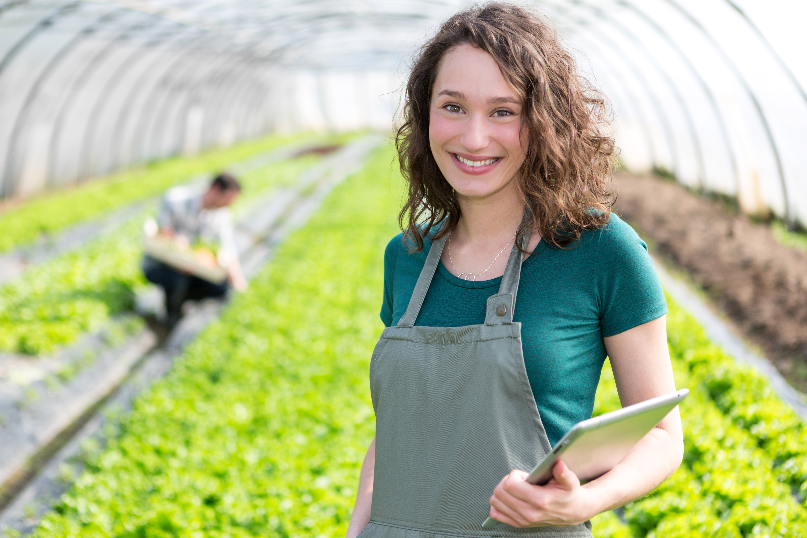
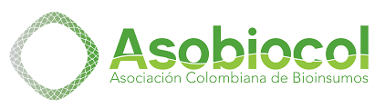
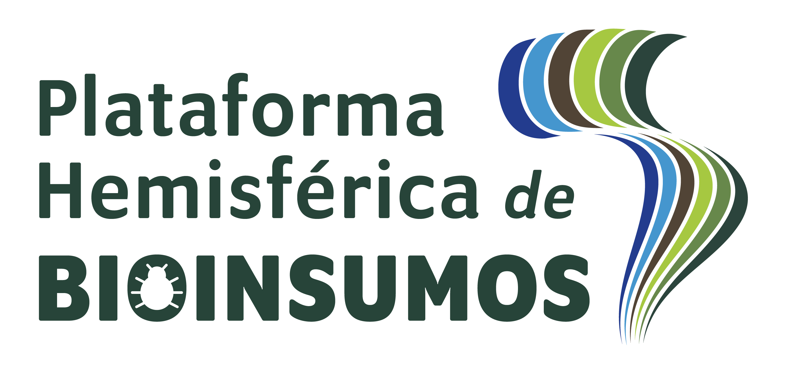
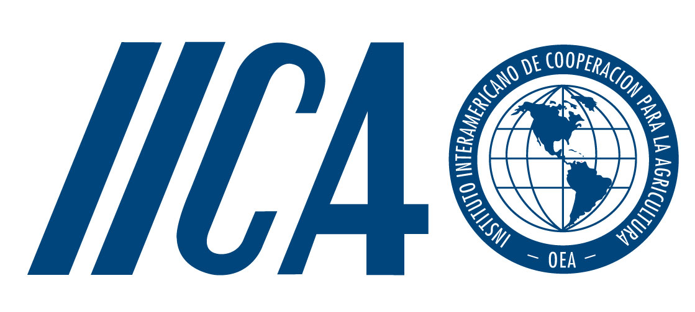
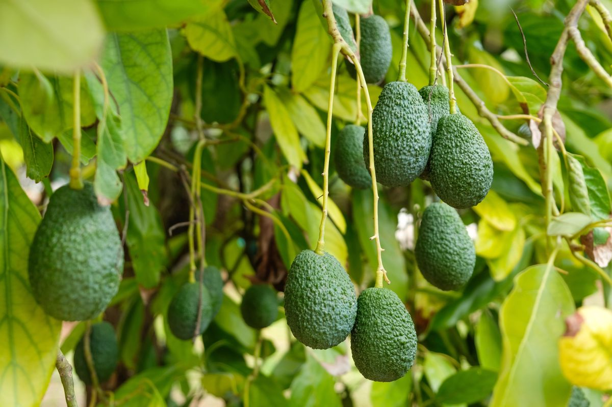
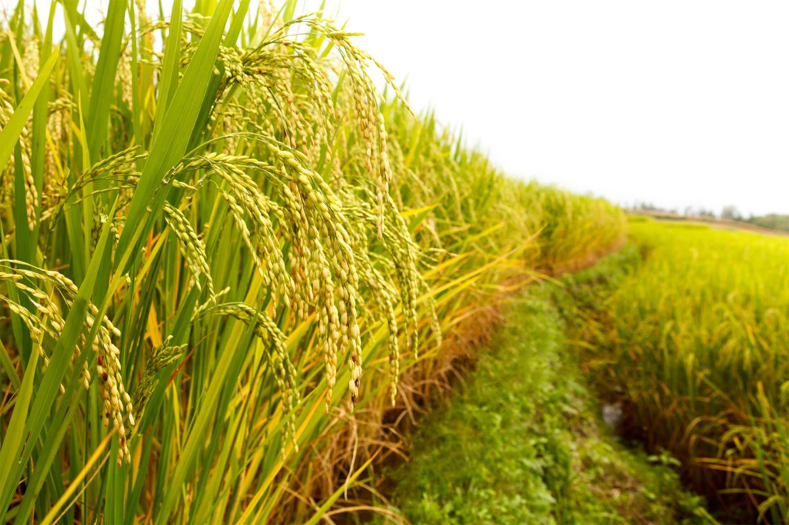
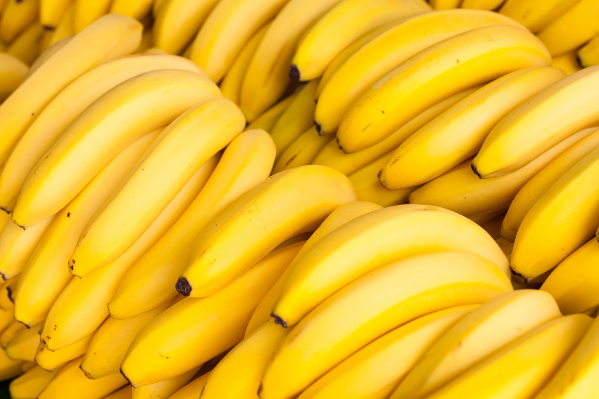
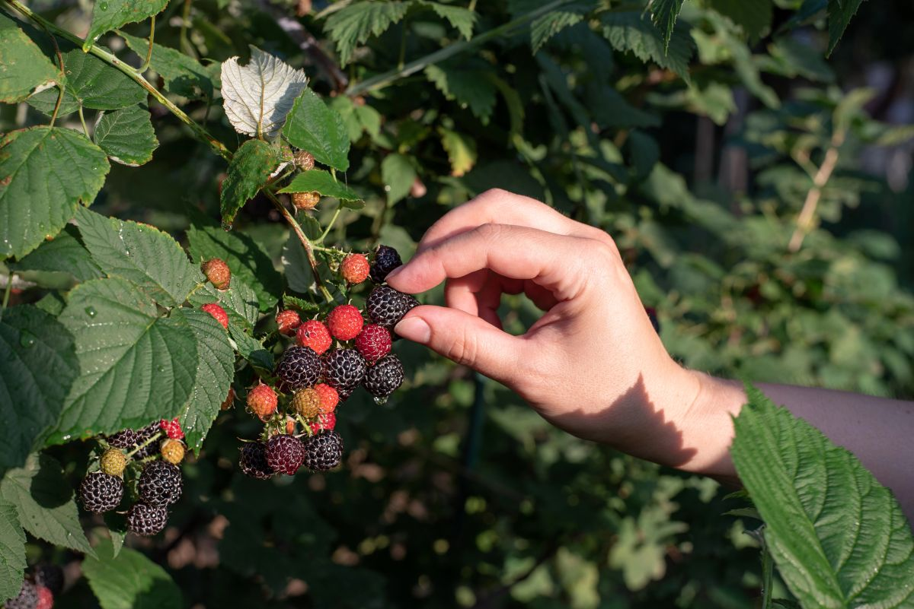
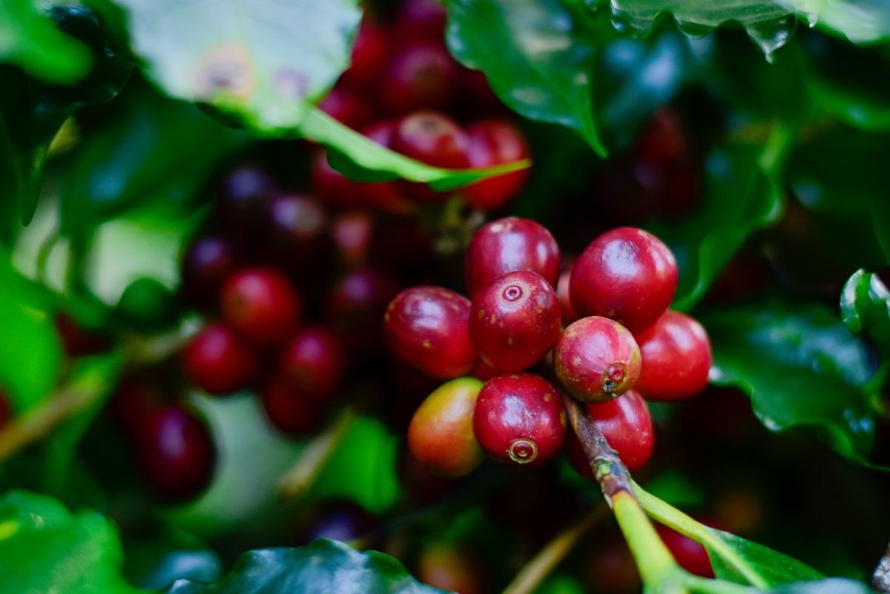
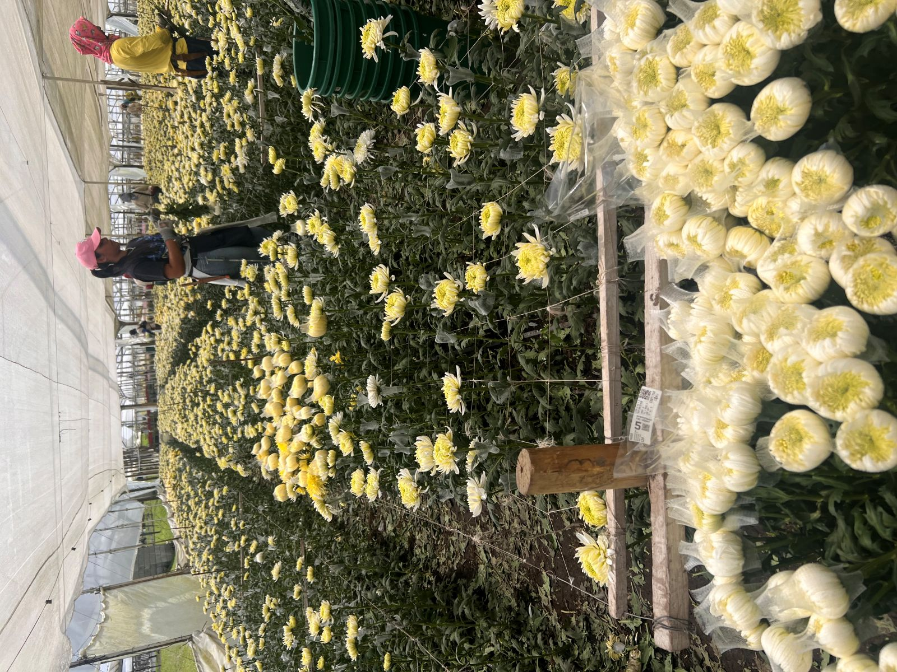

Academia Bio
Conocimiento que transforma el campo
Una iniciativa que conecta formación técnica, validación en condiciones reales y transferencia de conocimiento para fortalecer la adopción efectiva de bioinsumos.
Explorar por cultivo Explorar por tecnología
¿Por qué nace Academia Bio?
La adopción efectiva de bioinsumos requiere más que capacitación. Necesita generar conocimiento, validarlo en condiciones reales y transferirlo de forma efectiva a productores, técnicos y empresas.
Generación de conocimiento
Investigación, desarrollo y sistematización de experiencias.
Validación en campo
Evidencia técnica generada en condiciones reales de producción.
Transferencia tecnológica
Conexión efectiva entre ciencia, innovación y productores.
Una iniciativa apoyada por



Modelo Academia Bio
Un modelo de formación y transferencia que conecta ciencia, experiencia empresarial y necesidades reales de productores, técnicos y extensionistas.
Generación de conocimiento
Investigación, innovación y desarrollo tecnológico en bioinsumos.
Validación técnica
Evidencia y resultados observados bajo condiciones reales de campo.
Transferencia
Webinars, recursos técnicos, microaprendizaje y acompañamiento.
Resultados en campo
Mejor adopción, mayor confianza y uso adecuado de las tecnologías.
Explorar por cultivo
Accede a contenidos técnicos organizados por sistemas productivos priorizados.

Aguacate Hass
Manejo integrado con bioinsumos.

Arroz
Soluciones biológicas para sistemas arroceros.

Banano
Sanidad, nutrición y manejo del estrés.

Berries
Arándanos, uchuva y fresa.

Café
Aplicaciones técnicas para sistemas cafeteros.

Flores
Bioinsumos para sistemas ornamentales.
Explorar por tecnología
Una segunda ruta de navegación para acceder a los contenidos según el tipo de solución biológica.
Biocontrol
Manejo de plagas y enfermedades.
Biofertilización
Procesos biológicos asociados a nutrición vegetal.
Bioestimulación
Mejor desempeño fisiológico y vigor del cultivo.
Estrés abiótico
Herramientas para enfrentar condiciones ambientales adversas.
Manejo integrado
Uso de bioinsumos dentro de estrategias agronómicas completas.
Programación de webinars 2026
Primera programación técnica organizada por cultivo.
Aguacate Hass
Arroz
Banano
Berries
Café
Flores
Biblioteca técnica
Repositorio de webinars, presentaciones, guías, infografías y materiales descargables para apoyar la toma de decisiones en campo.
Webinars
Grabaciones y sesiones técnicas.
Guías técnicas
Documentos prácticos para consulta.
Casos de validación
Resultados y experiencias en campo.
Material descargable
Infografías, fichas y recursos visuales.
Construyamos juntos una mejor adopción de bioinsumos
Empresas, técnicos, productores y extensionistas pueden ser parte de Academia Bio.
Participar en Academia Bio